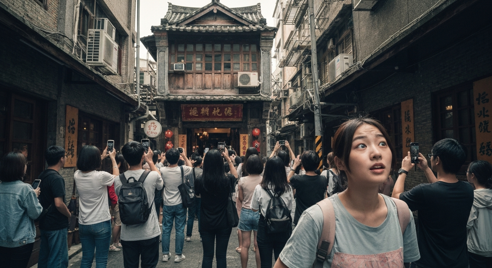
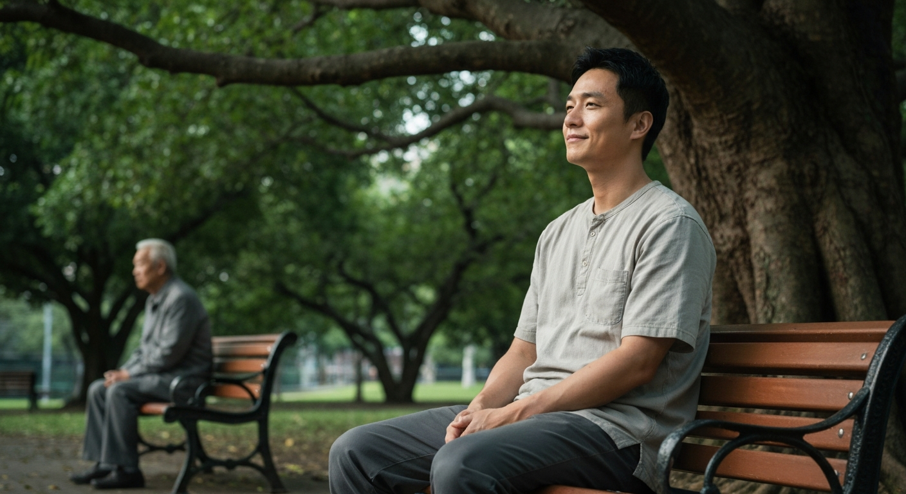

「Citywalk」不只走路？我發現的城市隱藏寶藏與心靈療癒
第 1 篇
Citywalk：一場對「無用」的反叛，還是新時代的自我麻痺？
週末早晨，社群媒體充斥著「Citywalk」的打卡照：精緻的咖啡、斑駁的紅磚牆、偶爾抬頭望見的藍天。這場看似優雅的城市漫遊，真的如其倡導者所言，是尋找城市寶藏、療癒心靈的解方嗎？抑或，它只是我們在「效率至上」的現代社會中，用另一種「有目的的無目的」行為，來逃避真正的閒適，甚至變相加速了內捲？
我敢斷言，多數人參與Citywalk，並非真正追求那份「無用之用」，而是被社群媒體的「展示焦慮」所裹挾。我們將漫步的路徑、光影、甚至腳下的石板，都視為可量化的「內容」素材，將本應純粹的放鬆，變成了另一種隱形的「生產力競賽」。你以為你在享受孤獨的漫步，實際上，你的潛意識正在盤算如何用濾鏡讓這一切看起來更美好，如何用標籤引發更多共鳴。這不是療癒，這是一種更精巧的自我綁架。你以為你逃離了辦公室的KPI，卻又掉入了社群KPI的陷阱。那些你精心挑選的文案和圖片，正是這場「無用之用」遊戲中最諷刺的證據。
我敢斷言，多數人參與Citywalk，並非真正追求那份「無用之用」，而是被社群媒體的「展示焦慮」所裹挾。我們將漫步的路徑、光影、甚至腳下的石板，都視為可量化的「內容」素材，將本應純粹的放鬆，變成了另一種隱形的「生產力競賽」。你以為你在享受孤獨的漫步，實際上，你的潛意識正在盤算如何用濾鏡讓這一切看起來更美好，如何用標籤引發更多共鳴。這不是療癒，這是一種更精巧的自我綁架。你以為你逃離了辦公室的KPI，卻又掉入了社群KPI的陷阱。那些你精心挑選的文案和圖片，正是這場「無用之用」遊戲中最諷刺的證據。
💬 Citywalk不是療癒，是另一種更精巧的自我綁架。

第 2 篇
當「城市寶藏」變成「流量餌食」：我們在消費什麼，又錯過了什麼？
還記得上個月，一則關於「台北隱藏版老宅咖啡廳」的Citywalk路線在小紅書上爆紅。一夕之間，原本寧靜的巷弄擠滿了打卡人潮，居民的生活被徹底打亂，咖啡廳主人也從佛系經營轉為疲於應付。這不只是個案，而是「Citywalk」現象的普遍縮影：當我們將城市中的「隱藏寶藏」定義為「可被分享」的內容時，它們的本質就已被扭曲。
真正的城市寶藏，是那些無法被標籤化、無法被複製的瞬間——是路邊阿婆突然遞來的一顆糖，是巷口老師傅敲打銅器的韻律，是老屋牆角一朵無名小花的倔強生命力。這些，都無法透過鏡頭傳達，也無法成為社群貼文的「亮點」。然而，在追求「爆款路線」和「獨家視角」的狂熱中，我們卻將這些真正賦予城市生命力的細節，棄若敝屣。我們以為自己發現了寶藏，實際上，我們只是在以一種更溫和的方式，消費著城市最脆弱的靈魂，同時也錯失了與城市建立更深層、更私密連結的機會。而這份連結，才是真正的心靈療癒。
真正的城市寶藏，是那些無法被標籤化、無法被複製的瞬間——是路邊阿婆突然遞來的一顆糖，是巷口老師傅敲打銅器的韻律，是老屋牆角一朵無名小花的倔強生命力。這些，都無法透過鏡頭傳達，也無法成為社群貼文的「亮點」。然而，在追求「爆款路線」和「獨家視角」的狂熱中，我們卻將這些真正賦予城市生命力的細節，棄若敝屣。我們以為自己發現了寶藏，實際上，我們只是在以一種更溫和的方式，消費著城市最脆弱的靈魂，同時也錯失了與城市建立更深層、更私密連結的機會。而這份連結，才是真正的心靈療癒。
💬 我們以為發現了寶藏，卻只是以溫和的方式消費城市最脆弱的靈魂。

第 3 篇
放下濾鏡，走入無用：Citywalk的真正療癒，在於「放棄掌控」
如果Citywalk不是為了打卡，不是為了流量，那它還剩下什麼？我認為，真正的心靈療癒，不在於你發現了多少「隱藏版」景點，而是你願意放下多少「預設的期待」和「社群的濾鏡」。城市漫遊的本質，應該是一場對「無用」的全然擁抱，一場與「不確定性」的坦誠相遇。它要求你放棄對時間、路線、甚至目的地的掌控，允許自己迷路，允許自己被偶遇的風景所牽引。
試想，當你不再需要為了尋找「拍照角度」而停下腳步，當你不再需要為了「文案靈感」而打開手機，你的感官會發生什麼變化？你會開始真正聽見風吹過樹梢的聲音，聞到巷口麵攤的香氣，甚至注意到陽光在牆上移動的軌跡。這些微不足道的「無用」細節，正是城市生命力的真實展現。它們無法被記錄，無法被分享，更無法被「變現」。它們的存在，只是為了被你純粹地感受。就像我曾遇到一位老爺爺，他每天只是坐在公園長椅上，不玩手機，不看報紙，只是靜靜地看著人來人往。他不是在「觀察」，而是在「存在」。那一刻，我才明白，真正的療癒，不是發現寶藏，而是成為寶藏的一部分。
試想，當你不再需要為了尋找「拍照角度」而停下腳步，當你不再需要為了「文案靈感」而打開手機，你的感官會發生什麼變化？你會開始真正聽見風吹過樹梢的聲音，聞到巷口麵攤的香氣，甚至注意到陽光在牆上移動的軌跡。這些微不足道的「無用」細節，正是城市生命力的真實展現。它們無法被記錄，無法被分享，更無法被「變現」。它們的存在，只是為了被你純粹地感受。就像我曾遇到一位老爺爺，他每天只是坐在公園長椅上，不玩手機，不看報紙，只是靜靜地看著人來人往。他不是在「觀察」，而是在「存在」。那一刻，我才明白，真正的療癒，不是發現寶藏，而是成為寶藏的一部分。
💬 真正的療癒，不是發現寶藏，而是成為寶藏的一部分。